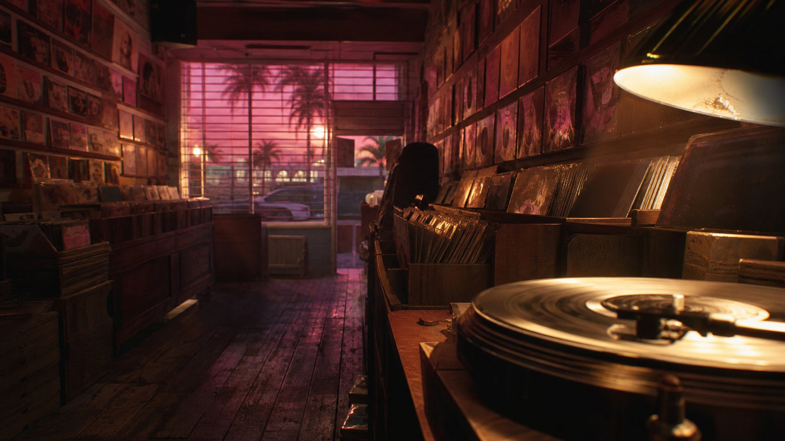
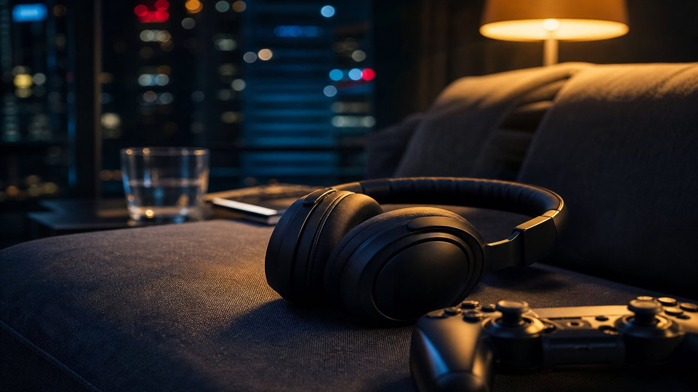
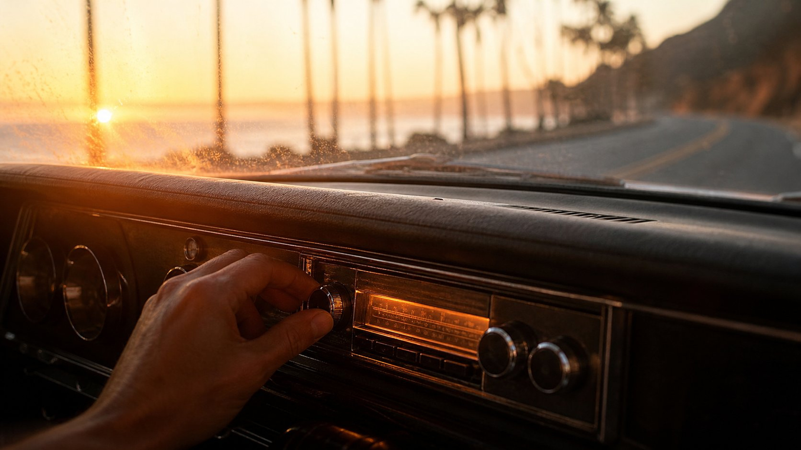
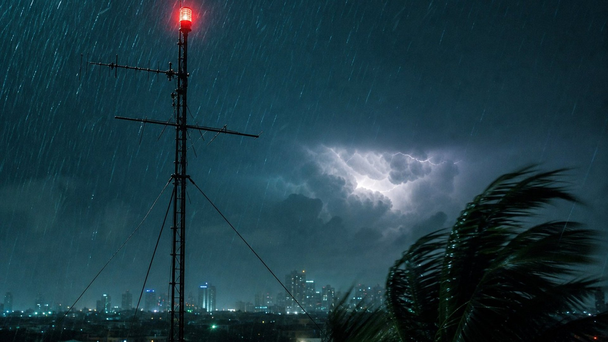
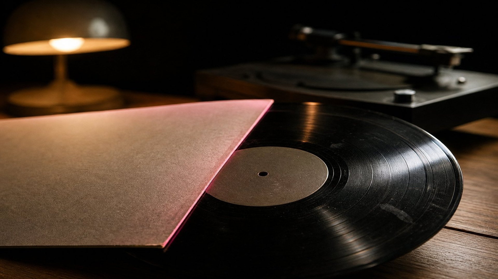
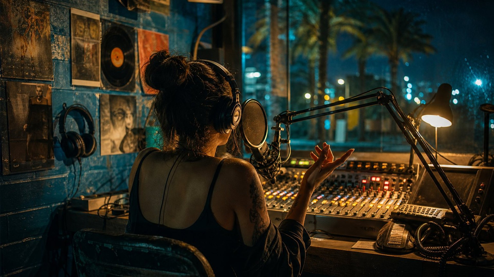
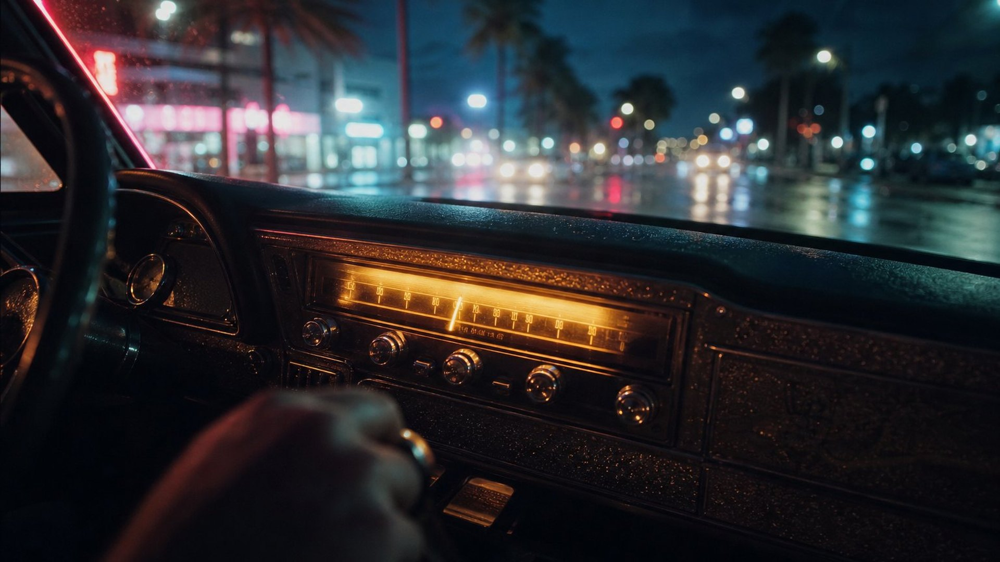

S4 · G5 · Radio
Musique et radio
Six stations officiellement présentées, dix-huit titres confirmés, un album de 34 morceaux le jour de la sortie et une bande originale signée Justice le 11 décembre. Le reste de la programmation n'a pas été publié.
Les six stations présentées par Rockstar
Le 8 octobre 2026, Rockstar a ouvert une rubrique musicale sur le site officiel et dévoilé six stations. Ce ne sont pas les seules — mais ce sont les seules nommées officiellement.
| Station | Genre | Animateurs | Réf. |
|---|---|---|---|
| Flash FM | Pop | Robyn et Alex Consani | MUS-10 |
| Cocoteo FM | Latin moderne : bachata, merengue, dembow, reggaeton | Bad Bunny (El Martillo) et RaiNao (La Gata) | MUS-10 |
| Back Country Radio | Country | Morgan Wallen (MW) et Lana Del Rey (Delta Dawne) | MUS-10 |
| AfroBank FM | Musiques africaines, amapiano, 3-step | Burna Boy (Burna) et Palms Trax (Palmsy) | MUS-10 |
| The Chamber 106.6 | Metal | Kerry King et Tom Araya (Slayer) | MUS-10 |
| Dirty South Classics | Rap et hip-hop du Sud | Trick Daddy et Trina | MUS-10 |
MUS-11

Les stations, les 18 titres confirmés et l'album du 19 novembre figurent dans cette page. Certaines apparitions musicales relèvent de l'histoire : elles ne sont pas décrites ici.
Titres confirmés, station par station
Dix-huit morceaux ont été dévoilés lors de l'annonce. Cette liste est exhaustive pour ce qui est public : tout le reste reste inconnu avant le lancement.
Flash FM
- Charli xcx — « Good Ones »
- MGMT — « Electric Feel »
- Zara Larsson & PinkPantheress — « Midnight Sun (Girls Trip) »
Rockstar qualifie Flash FM d'« institution de Vice City ». MUS-15
The Chamber 106.6
- Black Sabbath — « I »
- Pantera — « I'm Broken »
- Slayer — « Raining Blood »
Animée par deux membres de Slayer. MUS-16
Dirty South Classics
- David Banner ft. Lil' Flip — « Like A Pimp »
- JT Money ft. Solé — « Who Dat »
- DJ Khaled ft. Trick Daddy, Rick Ross & Pitbull — « Born N Raised »
Une déclaration d'amour au rap du Sud. MUS-17
Cocoteo FM
- Bad Bunny — « EoO »
- Romeo Santos & El Chaval de la Bachata — « Canalla »
- Axel Rulay ft. Farruko & El Alfa — « Si Es Trucho Es Trucho (Remix) »
- Myke Towers — « Girl »
MUS-19
Back Country Radio
- Glen Campbell — « Rhinestone Cowboy »
- George Strait — « The Fireman »
- David Allan Coe — « Need a Little Time Off for Bad Behavior »
- Loretta Lynn — « Don't Come Home A-Drinkin' »
- Hank Williams Jr. & Waylon Jennings — « The Conversation »
Reporter itinérant : Mud Dog Mike, depuis son hydroglisseur. MUS-18
AfroBank FM
- Asake — « Joha »
- Pat Thomas ft. Ebo Taylor — « Gye Wani »
- DJ Lag & Robot Boii ft. Kamo Mphela — « Shay'sana »
MUS-20
L'album et la bande originale
L'album — 19/11/2026
34 titres originaux, réalisés avec Atlantic Records, disponibles le jour du jeu. MUS-12
- Yung Lean feat. Future & Metro Boomin — « That's It »
- Travis Scott — « RHYNO » (prod. Guy-Manuel de Homem-Christo)
- CA7RIEL & Paco Amoroso, PinkPantheress, Fred again.., Etienne de Crécy — « Sexy Magic »
- Morgan Wallen — « Last Thing You Need »
- Rauw Alejandro — « Macacoa 2000 »
- Keith Richards — « Bright Lights, Big City »
La bande originale — 11/12/2026
30 pistes instrumentales signées Justice. MUS-14
À ne pas confondre avec l'album : l'un est une compilation de chansons inédites, l'autre la musique originale composée pour le jeu.
Un titre entendu dans un trailer ou sur l'album n'est pas pour autant affecté à une station : Rockstar n'a pas publié la correspondance. MUS-24

La musique des trailers
MUS-22Trailer 1 est monté intégralement sur « Love Is a Long Road » de Tom Petty (1989), un morceau unique du début à la fin.MUS-22Trailer 2 utilise six titres, dont « Hot Together » des Pointer Sisters (1986) et « Thunder Island » de Jay Ferguson (1978).MUS-22Ces morceaux proviennent de trailers : leur présence sur une station du jeu n'est pas confirmée.


Écouter Leonida hors du jeu
C'est l'un des rares contenus de GTA VI qu'on peut déjà posséder légalement : la bande originale sort en deux temps, et elle se consomme très bien sans la console. MUS-14
| Objet | Contenu | Statut | Disponibilité |
|---|---|---|---|
| GTA VI: The Album | 34 titres originaux, produits avec Atlantic Records | Annoncé | Streaming (sortie liée au lancement) |
| Album de score | 30 titres + bonus | Daté | 11/12/2026 — streaming, CD et vinyle |
Le score, c'est la musique qui accompagne les missions et les transitions : plus discret que les stations, et souvent ce qui reste en tête après une session. Le programme des 34 titres, lui, sert de vitrine au label : il annonce aussi le ton des stations qui ne sont pas encore nommées.

Écouter à pied et en podcast
Deux nouveautés de confort qui changent l'usage de la radio.
Radio au casque
On peut écouter la radio à pied, au casque, sans être dans un véhicule. MUS-21
Podcasts à la demande
Des émissions de podcast sont disponibles à la demande dans le jeu — une première dans la série. MUS-21

